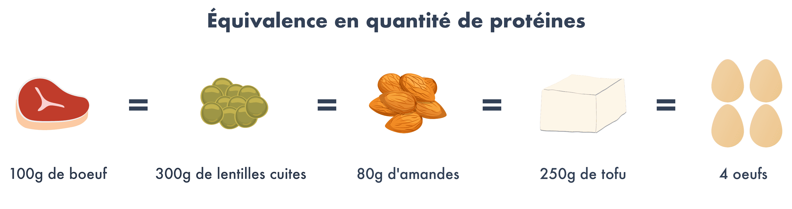
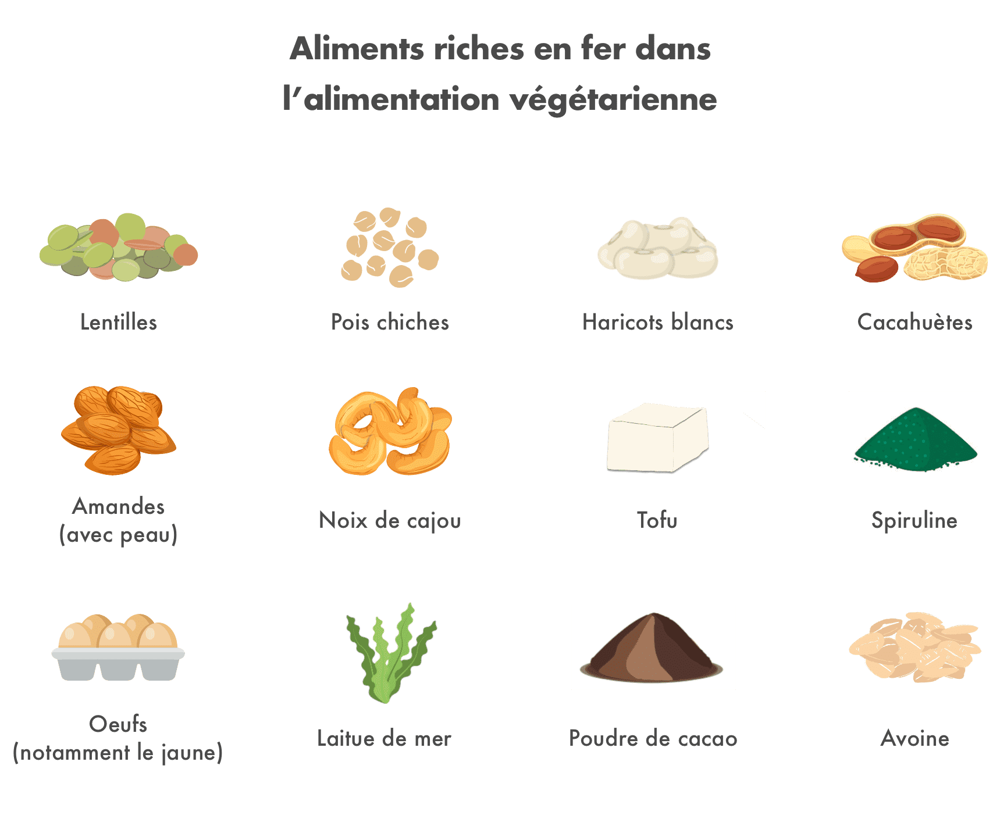

Le régime végétarien séduit de plus en plus de monde : 4% des français seraient déjà végétariens. Mais, ce mode d’alimentation est en proie à des débats houleux entre ceux qui y voient l’alimentation du futur, et ceux qui au contraire le considèrent comme un régime dangereux conduisant à des carences et à une remise en question de nos traditions gastronomiques.
Il est tout d’abord nécessaire de bien comprendre ce qui se cache derrière ce terme. Une personne végétarienne ne consomme pas de chair animale. Elle ne mange donc pas de viande ni de poisson, mais elle peut consommer des oeufs ou encore des produits laitiers. Il faut distinguer le végétarisme du véganisme, qui lui exclut tout produit issu des animaux : il bannit donc les oeufs, les produits laitiers (yaourts, fromage, etc.) ou encore le miel. Cet article traite essentiellement du régime végétarien, et non pas du régime végétalien.
Alors, est-il possible de suivre une alimentation végétarienne et d’être en bonne santé ? Voici notre décryptage sur le sujet, réalisé avec l’aide du nutritionniste Anthony Berthou.
Il n’y a pas que la viande et le poisson qui contiennent des protéines !
C‚Äôest l‚Äôun des arguments qu‚Äôon entend le plus souvent : les v√©g√©tariens auraient des carences en prot√©ines, car les prot√©ines se trouvent dans la viande et dans le poisson (voir notre article sur les prot√©ines). Or, les v√©g√©tariens peuvent consommer des oeufs et des produits laitiers comme des yaourts ou du fromage, qui sont de bonnes sources de prot√©ines. Il existe par ailleurs de nombreuses sources de prot√©ines v√©g√©tales : soja, haricots rouges, pois chiches, lentilles, amandes, noix, noisettes, riz complet, quinoa…

Les prot√©ines sont constitu√©es d‚Äôacides amin√©s, qui sont en quelque sorte des ‚Äúmini-prot√©ines‚Äù qui jouent un r√¥le fondamental dans le fonctionnement de notre organisme : elles ne servent pas uniquement √† fabriquer du muscle, elles jouent aussi un r√¥le indispensable dans la d√©fense de notre syst√®me immunitaire ou encore dans le fonctionnement de notre syst√®me nerveux. Certains acides amin√©s peuvent √™tre fabriqu√©s par notre organisme √† partir de notre alimentation, mais d‚Äôautres doivent √™tre apport√©s par l’alimentation car notre organisme ne sait pas les fabriquer : ce sont les 8 acides amin√©s essentiels (il en existe 9 chez l‚Äôenfant). La r√©f√©rence historique en termes d‚Äôacides amin√©s est l‚Äôoeuf : il contient l‚Äôensemble des 8 acides amin√©s essentiels dans des proportions id√©ales.
Hormis l’oeuf, aucune prot√©ine animale ni v√©g√©tale ne poss√®de √† elle seule un apport optimal en acides amin√©s essentiels. Elles pr√©sentent toutes une teneur limit√©e en certains acides amin√©s essentiels : c’est la compl√©mentarit√© de ces prot√©ines qui permet d’assurer un apport en acides amin√©s essentiels dans les proportions id√©ales.¬†Parmi les prot√©ines v√©g√©tales, les c√©r√©ales pr√©sentent par exemple une teneur limit√©e en lysine, et les l√©gumineuses manquent de m√©thionine.

Dans un r√©gime v√©g√©tarien, il est tout √† fait possible de combiner les sources de prot√©ines v√©g√©tales afin d’assurer un apport optimal en acides amin√©s essentiels.¬†Cette combinaison peut se faire en sein de la journ√©e et pas n√©cessairement au sein du m√™me repas. Ainsi, l‚Äôassociation de c√©r√©ales et l√©gumineuses permet g√©n√©ralement d‚Äôassurer un apport complet (exemple : semoule et pois chiche, riz et lentilles, ma√Øs et haricots rouges, etc.).
Par ailleurs, la croyance populaire veut que le sportif consomme beaucoup de viande pour combler ses apports en protéines. Or, il est également tout à fait possible de concilier régime végétarien (voire végétalien/vegan) avec la pratique sportive. Pour en savoir plus sur ce sujet, vous pouvez consulter l’article d’Anthony Berthou Peut-on être végétarien ou vegan et sportif ?
Les végétariens, tous en carence de Fer et de vitamine B12 ?
Un autre argument en défaveur de l’alimentation végétarienne qui revient souvent concerne les carences en Fer, qui se trouverait principalement dans la viande. Or, il faut savoir qu’il existe deux types de fer :
- le fer héminique : il est apporté par les produits d’origine animale (hormis l’oeuf), notamment par la viande rouge. Il est facilement absorbé par l’organisme. Cependant, il est nocif pour l’organisme en quantité élevée : l’excès de fer héminique conduit au développement des radicaux libres, qui sont en cause dans l’apparition de cancers.
- le fer non héminique : il est principalement apporté par les végétaux et par les oeufs. Le défaut du fer non héminique est qu’il est moins bien assimilable que le fer héminique, c’est-à-dire qu’il est moins facilement absorbé par l’organisme. Parmi les végétaux les plus riches en fer non héminique, on trouve la spiruline, les légumineuses, le tofu, le quinoa, les noix, les raisins secs, les graines de sésame/tournesol, l’avocat.

L’idéal est de s’assurer un bon apport en fer non héminique tout en veillant à favoriser son assimilation. Pour cela, il est recommandé de :
- favoriser l‚Äôapport de vitamine C qui augmente l’absorption du fer : on en trouve notamment dans les fruits et l√©gumes crus comme le poivron, le brocoli, le kiwi ou encore les agrumes.
- ne pas consommer de th√© pendant et autour du repas car les tanins qu‚Äôil contient perturbent l’absorption du fer.
- faire tremper les l√©gumineuses au moins 12h avant de les cuire : cela permet de neutraliser l’acide phytique qu’elles contiennent et qui emp√™che la bonne assimilation du fer
Enfin, contrairement aux idées reçues, les végétariens qui consomment des oeufs et produits laitiers ne manquent pas non plus de vitamine B12. En effet, cette vitamine est abondante dans les produits d’origine animale : on la retrouve donc effectivement dans le viande ou le poisson, mais aussi dans les oeufs et les produits laitiers, qui peuvent être consommés dans le cadre d’un régime végétarien. En revanche, il est conseillé aux personnes qui ne consomment aucun produit d’origine animale (régime végétalien/végan) de réaliser une prise de sang et si besoin de prendre des compléments alimentaires ou des aliments enrichis en B12, comme la levure maltée et certains laits végétaux. Pour en savoir plus, vous pouvez consulter l’article d’Anthony Berthou sur la vitamine B12.
Le régime végétarien serait-il en fait LE régime santé par excellence ?
Une étude de 2013 de l’université d’Oxford montre que les végétariens ont en moyenne 32% de risques en moins d’être victimes de maladies cardio-vasculaires. En effet, le régime végétarien exclut la consommation de poissons et de viandes, qui sont des aliments naturellement riches en acide gras saturés et en oméga-6 (en particulier les viandes rouges et transformées), que nous consommons aujourd’hui en excès par rapport à nos besoins (voir notre article sur les graisses). Par ailleurs, il a été démontré que les risques de cancer du côlon et de cancer du sein augmentent largement avec une consommation quotidienne de viande et de charcuterie. La viande transformée (jambon, saucisses, steacks hachés, surimi, etc.) a même été classée comme “cancérigène” et la viande rouge comme “probablement cancérigène” par l’OMS (Organisation Mondiale pour la Santé) en 2015.
Chez les végétariens, la viande est remplacée par des légumes, légumineuses et céréales : des aliments pauvres en graisses et naturellement très riches en fibres. Or, notre consommation de fibres est souvent insuffisante. Pourtant, les fibres jouent un rôle essentiel afin de réguler notre glycémie (voir notre article sur les glucides) et d’éliminer certains éléments toxiques que nous ingérons comme les pesticides. Une alimentation végétarienne, riche en fibres et en antioxydants (présents en abondance dans les fruits et légumes) permet donc de prévenir les risques de maladies cardio-vasculaires et de cancers.
Pour autant, suivre une alimentation végétarienne ne suffit pas à être en bonne santé si elle est suivie n’importe comment. Une alimentation riche en céréales sucrées pour le petit-déjeuner, chips, sodas, pain de mie, ou encore produits transformés pleins d’additifs étiquetés “végétarien” ou “vegan” est loin d’être recommandable. L’alimentation végétarienne doit être suivie de manière équilibrée pour éviter les carences et favoriser des apports optimaux en nutriments. Ne vous laissez donc pas avoir par le marketing qui profite de l’attrait pour ce mode d’alimentation pour afficher “végétarien” ou “vegan” sur des produits qui n’ont dans tous les cas aucune raison de contenir des ingrédients d’origine animale.
Et si le régime végétarien pouvait sauver la planète ?
Selon la FAO (Food and Agriculture Organization), la consommation mondiale de protéines animales a doublé en moins de 50 ans et devrait encore augmenter de 70% pour nourrir l’ensemble de la population en 2050 si nos choix alimentaires n’évoluent pas. Cette hausse est essentiellement observée dans les pays développés et dans les pays en développement : la consommation de viande en Chine a par exemple été multipliée par 8 en moins de 40 ans. Par ailleurs, 40 % des céréales cultivées dans le monde sont destinées à alimenter le bétail.
Grâce aux organisations internationales et aux ONG, on sait aujourd’hui que l’élevage industriel fait partie des secteurs les plus destructeurs de la planète. C’est la production industrielle de viande en masse qui pose problème, car elle nécessite beaucoup d’espace (déforestation), de nourriture (pesticides, engrais antibiotiques), d’eau (épuisement des ressources) et de transports (CO2).
Par exemple, pour produire 1kg de viande bovine, il faut environ 15 500 litres d’eau, alors qu’1kg de soja ne demande que 1 800 litres d’eau.

Toujours selon le FAO, l’élevage des animaux nécessaires à l’alimentation est responsable de 15% des émissions totales de gaz à effet de serre, soit davantage que les transports. Les éructations des ruminants sont également responsables de 37 % des émissions de méthane. Or, le potentiel de réchauffement du méthane est 23 fois supérieur à celui du CO2. Le plus polluant est l’élevage des ruminants (notamment les bovins : boeufs, vaches, veaux) qui représente à lui seul 50% des émissions de méthane.
Selon un rapport des Nations Unies, la diminution de la production d’élevage est à considérer comme une des meilleures stratégies pour stopper le réchauffement climatique et la déforestation.
Pour en savoir plus sur le lien entre protéines animales et environnement, vous pouvez consulter l’article d’Anthony Berthou : http://www.sante-et-nutrition.com/proteines-animales-environnement/
Comment devenir végétarien quand on est accroc à la viande ?
Si sur le papier, on peut être convaincu, dans la pratique c’est souvent beaucoup moins simple et difficile à mettre au quotidien. C’est pourquoi est né assez récemment ce qu’on appelle le flexitarisme, ou semi-végétarisme, qui est une version plus flexible du régime végétarien. Un flexitarien consomme de la viande et du poisson mais de façon beaucoup plus occasionnelle et privilégie la qualité à la quantité. Le régime flexitarien permet de limiter voire d’exclure la viande transformée, qui est la plus problématique, et de favoriser les morceaux de viandes de qualité (élevage local, animaux élevés en plein air, pas d’utilisation d’OGM, etc.).
Quant au pescétarisme, il exclut la viande mais conserve les poissons et des fruits de mer. Il permet ainsi de bénéficier des bienfaits des poissons et autres produits de la mer riches en Oméga-3, des acides gras très bénéfiques que nous ne consommons pas suffisamment aujourd’hui.
Aujourd’hui, ces alternatives séduisent de plus en plus de français soucieux de leur santé et de l’environnement, mais pour qui le végétarisme est encore trop contraignant. Ces alternatives sont une bonne première étape pour évoluer vers une alimentation plus végétale. Car, réduire sa consommation de viande n’est aujourd’hui pas un simple effet de mode : il s’agit d’une véritable nécessité sanitaire et environnementale.
- Diallo A, Deschasaux M, Latino-Martel P, Hercberg S, Galan P, Fassier P, Allès B, Guéraud F, Pierre FH, Touvier M. Red and processed meat intake and cancer risk: Results from the prospective NutriNet-Santé cohort study. Int J Cancer. 2018 Jan 15;142(2):230-237. doi: 10.1002/ijc.31046. Epub 2017 Oct 16. PubMed PMID: 28913916.
- WHO, 2007, Protein and amino acid requirements in human nutrition: report of a joint FAO/WHO/UNU expert consultation, World Health Organisation, technical report series, no. 935
- Springmann, M., Godfray, H. J. C., Rayner, M., Scarborough, P. (2016), Analysis and valuation of the health and climate change cobenefits of dietary change, PNAS, vol. 113 no. 15 4146–4151, doi: 10.1073/pnas.1523119113
- Crowe FL, Appleby PN, Travis RC, Key TJ. Risk of hospitalization or death from ischemic heart disease among British vegetarians and nonvegetarians: results from the EPIC-Oxford cohort study. Am J Clin Nutr. 2013 Mar;97(3):597-603. doi: 10.3945/ajcn.112.044073. Epub 2013 Jan 30. PubMed PMID: 23364007.
- Davey GK et al. EPIC-Oxford: lifestyle characteristics and nutrient intakes in a cohort of 33 883 meat-eaters and 31 546 non meat-eaters in the UK. Public Health Nutr. 2003 May;6(3):259-69.
- OMS : https://www.who.int/features/qa/cancer-red-meat/fr/
- The Water Foodprint Network : https://waterfootprint.org/en/water-footprint/product-water-footprint/water-footprint-crop-and-animal-products/

Avez vous des livres de recette pour le cru ?
Je ne supporte plus le lait,le sucre, la viande. Je souhaite devenir v√©g√©tarien.merci pour l aide et les recettes qui pourraient m aider. C’est une question de vie ou de mort en ob√©sit√© morbide 123 kilos pour 178 cms.
je suis n√© dans l’alimentation de plusieurs generation et suis devenu compl√®tement V√©g√©talien depuis plusieurs mois. premi√®rement nous d√©truisons notre plan√®te r√©ellement avec la surproduction pour nourrir les animaux et tous ce qui sans suit avec la pollution que c’est pauvre b√™tes peuvent faire, comme l’article peut nous le d√©montrer si bien. Mais ce qu’il faut aussi savoir c’est que meme si on vous dit que ces animaux sont BIO il faut voir plus loin que ca… Quand l’animal est malade le v√©t√©rinaire viens lui faire des vaccins pour qu’il aille mieux il lui injecte des antibiotiques et tous ces bon produits pharmaceutiques qu’il vient de recevoir se retrouve dans votre viande et indirectement vous venez de manger un bon morceaux de veau, de porc de boeuf bio ou non dans votre assiette… ces hormones se retrouve alors de votre syst√®me a vous maintenant …. de plus nous faisons souffrir ces pauvre animaux pour notre plaisir culinaire, ne pensez-vous pas que nous ne sommes pas con√ßue pour ce type de nourriture?
Pourriez-vous me donner des conseils et des recettes, je dois perdre 53 kilos en 2 ans .Si non je ne verrai pas grandir mes enfants et petits enfants. Merci pour les conseils.
Bizarre, dans mes cours de nutrition j’ai bien appris que les aliments contenant les 9 acides amines essentiels sont (complete protein): oeufs, viande, poulet, produits laitiers (animal), ainsi que le soja, bel noir et quinoa…. le reste est incomplet. Sur le reste de l’article, bien entendu a prendre avec des pincettes des que l’on se base sur des etudes on trouve tout et son contrainte, et on trouve toujours de quoi nourrir son point de vue.
Bonjour à toute et à tous !
Très bonne article !
Personnellement cela fait maintenant 10 mois que je suis v√©g√©tarien et c’est gr√¢ce √† ce livre de Charle DN qui m’a vraiment aider lors des premi√®res semaines. Voici le lien du livre : https://bit.ly/2QXTRVy
Comment fait on pour assimiler les légumes secs ?
Le GASTRo enterologue l’interdit suite à mes problèmes digestifs , gaz , ballonnements etc or je voudrais adopter un régime végétarien . De même le riz complet ne m’est pas recommandé
j’ai decouvert l’histoire d’une vegetarienne retranscrit dans un livre qui est super, je vous donne le lien: https://1tpe.net/go.php?dat=eHhwb2xvMTZ4eC53b3JzbWFyZC4z&tk=
Bravo pour cet article argument√© et qui r√©sume bien les enjeux nutritionnels et environnementaux des r√©gimes v√©g√©tariens. J’appr√©cie particuli√®rement les citations bibliographiques pour les plus scientifiques d’entre nous.
sono vegetariano e mangio le persone e l insalata al mc donlads
je suis v√©g√©tarien mais j’adore le porc roti
ora vado al Mc’Donald
Mc’Donald
anch’io domani vado
Merci pour votre article vous m‚Äôavez appris beaucoup de choses sur l‚Äôalimentation üëçüëç
Épuise
Bjr, je suis v√©g√©tarienne depuis plus de trente cinq ans et je n’ai jamais eu de carence en quoi que ce soit…
Merci pour pour ces renseignements je suis v√©g√©tarienne depuis bient√¥t 4 ans. Et je n’ai aucun regret trop de souffrance animal. Et rien que pour √ßa je ne mangerai plus jamais de viande. Et √ßa Grasse a l214 super associations. Merci √† vous
Merci pour votre article, je suis végétarienne depuis 3 ans et je me sens très bien. Trop de souffrance pour les animaux en plus nous pouvons remplacer par les produits végétaux.
J’ai une analyse de sang 1 fois par an pour contrôler le niveau de fer et de vitamine.
Mille mercis à vous.
merci pour cette article , je suis v√©g√©tarien depuis 35 ans et aucune analyse de sang pratiqu√© une fois par an n’√† d√©tect√© un manque de vitamine ou de fer , il faut juste √©quilibr√© les rations
Merci pour pour ces renseignements je suis v√©g√©tarienne depuis bient√¥t 4 ans. Et je n’ai aucun regret trop de souffrance animal. Et rien que pour √ßa je ne mangerai plus jamais de viande. Et √ßa Grasse a l214 super associations. Merci √† vous
Merci
Il ne faut pas perdre de vue toutes les viandes en quantité monstrueuse, non vendues et jetées. Tous ces animaux morts pour rien!
Bonjour,
J’ai une de mes filles qui a 17 ans et qui depuis un an est devenue v√©g√©tarienne. Je m’inqui√®te qu’ √† son √¢ge qu’elle ne mange plus de viande ni de poissons. Qu’en pensez-vous ??
Bonjour,
J’ai 15 ans, je suis v√©g√©tarienne et tout va bien pour moi. Ne vous inqui√©tez pas pour votre fille, un r√©gime v√©g√©tarien n’est en rien dangereux, il suffit d’√©quilibrer correctement son alimentation. Si vraiment vous avez des doutes quant √† la mani√®re dont elle g√®re son alimentation, vous pouvez l’emmener voir un nutritionniste qui vous rassurera et vous fournira les renseignements n√©cessaires.
Merci blomy
Ce qui est important aussi dans le fait d’√™tre v√©g√©tarien est de supprimer les horreurs des abattoirs et du transport des animaux vivants . Pensons √©galement aux poissons qui une fois sortis de l’eau agonisent ….! Par ailleurs , tout ce qui tourne autour de la production de lait ( vache , ch√®vre , brebis, buffle …) implique h√©las le sacrifice des petits ( m√¢les surtout ). Enfin , n’oublions pas les poules pondeuses en fin de carri√®re , en esp√©rant qu’auparavant qu’ elles ont pu √©voluer en plein air et suffisamment d’espace .
Je veux bien le programme nutrition
Merci
on stoppe ou pas la viande!!!! la réduire? est hypocrite!
Bonjour je trouve vôtre comportement plutôt extrême et grave.
Je ne vois pas le rapport entre faire des efforts et l’hypocrisie,
bien au contraire il est plut√¥t salutaire de r√©duire √ßa consommation de viande pour ceux qui en mangeant, dire le contraire serai hypocrite n’est ce pas ?
Pensez aux personnes qui veulent ≈ìuvrer pour le bien commun du vivant et poussez les plut√¥t vers le bon chemin avec bienveillance au lieu de divis√©… Penser √† ceux qui veulent franchir le pas sans pour autant faire n’importe quoi avec √ßa sant√©, pour certains une transition graduelle est n√©cessaire, taper sur les autres n’a jamais donn√© de bon r√©sultat !
Ce que je vous conseil en revanche c’est d’apprendre √† ceux qui le souhait manger sans viande et bien manger avec go√ªts et saveurs, faite le choix du savoir vivre sans parti pris avec le respect du et des vivants ! Cordialement
R√©duction de la consolation de viande =r√©duction de la maltraitance animale…
Blomy evolue,je l’ai d√©j√† dit, les meilleurs sont de la naturopathie, non des nutritionniste, Novak Djokovic et Lewis Hamilton sont vegan, et des adeptes de la musculation sont vegan et en bonne sant√©
Article tr√®s bien fait, ayant des bases de nutrition je le trouve tr√®s clair et p√©dagogue..ce qui n’est pas toujours √©vident.
Bravo!
Une végé convaincue et en bonne santé!
Bonjour,
Merci beaucoup pour cet article, très informatif sur les nombreux bienfaits du végétarisme.
Moi-m√™me flexitarienne depuis 3 ans, et sur la voie du v√©g√©tarisme, je suis convaincue qu’un petit effort collectif sur la r√©duction de la consommation de viande m√®nerait √† de grands pas pour l’environnement !! Chacun son rythme dans le changement, mais ce qui compte, c’est une transition alimentaire durable, et r√©duire sa consommation de viande un peu, c’est top üôÇ
Dans la continuit√© de cet article, j’aurais bien aim√© avoir des conseils pour devenir v√©g√©tarien sans trop de contraintes ! Personnellement, j’utilise l’app Vegg’up (allez voir leur site c’est vraiment top ! https://veggup.com/) pour m’aider et avoir des id√©es de recette et r√©ussir √† passer le cap une bonne fois pour toute.
Dans tous les cas, je suis vraiment contente d’apporter ma contribution dans un engagement plus large vers une alimentation plus saine et plus respectueuse de l’environnement !
Attention √† ne pas reprendre sans r√©fl√©chir les informations qui circulent sur le net. Les 15000 litres d’eau pour 1 Kg de viande sont imposture. Premi√®rement, dans le calcul l’eau de pluie qui tombe dans les prairie est consid√©r√©e comme consomm√©e par les animaux!!! Deuxi√®mement l’eau ne dispara√Æt pas. Elle est int√©gr√©e dans un cycle: le cycle de l’eau; elle est assimil√©e puis retourne dans le milieu naturel. Faites consommer des fruits et l√©gumes pour leurs qualit√©s mais de gr√¢ce √©viter les arguments n√©gatifs concernant les viandes et produits animaux. L’alimentation doit √™tre √©quilibr√©e avec des produits animaux et v√©g√©taux.
Dommage, vous utilisez des chiffres et images sans apporter d’explications compl√®tes ce qui permet une interpr√©tation biais√©e des informations.
Le plus bel exemple est ce fameux chiffre de 15 500 litres d’eau pour 1kg de boeuf. Il faudrait peut √™tre d√©tailler que derri√®re ce chiffre se trouve plusieurs choses : l’eau que le bovin boit, l’eau pour abattoir et enfin (la plus grosse partie) l’eau pour les grains et fourrages.
Et pour terminer je citerai un article de la RTBF (lien : https://www.rtbf.be/info/societe/detail_combien-de-litres-d-eau-faut-il-pour-produire-un-kilo-de-viande-de-boeuf?id=9541099 ) :
¬´¬†Tout d√©pend donc de quoi on parle : de l’eau bue par le bovin, ou bien de l’eau n√©cessaire tout au long son parcours, alimentation comprise. Et bon √† rappeler, en Wallonie, l’alimentation des bovins est loin d’√™tre la m√™me que dans les √©levages intensifs am√©ricains, br√©siliens ou flamand. Comme le soulignait d’ailleurs St√©phane Delogne, le b√©tail wallon se nourrit beaucoup en prairie (48%), boit souvent de l’eau des rivi√®res. Une toute autre situation, vu que les prairies ¬´¬†avalent¬†¬ª du CO2 pour restituer de l’oxyg√®ne et qu’on √©conomise en empreinte CO2 provenant du transport de la nourriture (ma√Øs, soja).¬†¬ª
Donc c’est bien beau, mais encore une fois, on essaie de nous faire avaler n’importe quoi avec des chiffres sortis de leur contexte. Ce qui nous aiderait r√©ellement c’est de stopper la surconsommation, quelque soit le domaine.
Vous devriez aussi indiquer, que pour l’√©quivalent de 100 gr de viande : le nombre de calories , et aussi l’√©quivalent v√©g√©tarien (de 300 gr de lentilles, par ex,) en calories… ( 2 fois plus…). ET signaler que pour obtenir 50 √† 60 gr de prot√©ines par jour en l√©gumes, c√©r√©ales, lentilles et assimil√©s, ol√©agineux, etc…: cela induit une plus grande quantit√© de calories = Donc, attention √† la prise de poids !…
Au Paragraphe : Equivalence en Quantit√© de Prot√©ines : Pour 100 gr de Boeuf = 20 gr de prot√©ines , vous indiquez, pour obtenir l’√©quivalence d’autres sources . Pas √©vident de consommer, √† la place d’un petit steak de 100 gr = 250 gr de Tofu (2,5 steaks de soja) ou bien, 300 gr de Lentilles cuites (lourd √† dig√©rer !). 80 gr d’amandes (environ 60 amandes !) ou 4 Oeufs (ou plut√¥t 3 moyens).
Vous pourriez aussi indiquer la Qt√© journali√®re recommand√©e , soit 50 √† 60 gr par jour…
J’ai surtout l’impression de lire, du pros√©lytisme anti viande! L’article fait mention de l‚Äô√©levage d’ animaux et des √©missions totales √† effet de serre, soit davantage que les transports ? Vous avez sans doute oubli√©, les bateaux et les avions tr√®s polluants, ainsi que les centrales nucl√©aires qui rejettent de l’acide tritium dans l’eau et dans l’air ( voir le site de Greenpeace ) bien plus √† mon avis que les √©levages d’ animaux. De fa√ßon objective , les anciens, agriculteurs et concitoyens en g√©n√©ral vivent tr√®s vieux et sans cancer en ayant mang√©s de la viande ! tandis qu’aujourd’hui malheureusement je vois √©norm√©ment de personnes qui n’atteignent pas 60 ans , atteints de cancer et de plus en plus… Nous avons r√©ussi √† nous d√©barrasser des religions , que nous avons remplacer par le V√©ganisme.
La bonne alimentation c’ est de manger de tout avec mod√©ration, se faire plaisir, de pr√©f√©rence sans les pesticides et OGM et autres antibio etc…
Votre commentaire est tout √† fait confus car vous m√©langer plusieurs choses. ¬´¬†De fa√ßon objective¬†¬ª ne veut d√©j√† rien dire, l’objectivit√© si elle est un but √† atteindre, n’existe pas et vos pr√©jug√©s sur l’√©tat de sant√© des ¬´¬†anciens¬†¬ª ne se basent que sur des croyances. De plus, quel lien de corr√©lation essayez vous de produire ? Les anciens vivaient plus longtemps, aujourd’hui non, faute √† quoi ? En quoi r√©duire la viande influe ce ph√©nom√®ne ? Vous m√©langez les probl√®mes de sant√© li√© √† l’agriculture industrielle et l’alimentation animal. Vous parlez ensuite de religion et de v√©ganisme … c’est hors de propos car ici on parle de v√©g√©tarisme. ¬´¬†La bonne alimentation c’est de manger de tout avec mod√©ration¬†¬ª. Incontestablement il y a du vrai l√† dedans, mais vous prenez alors le probl√®me par l’UNIQUE prisme de la sant√© humaine. QUID de l’impact de l’alimentation animale sur l’environnement ? De l’√©thique ? Rien ? Avez-vous r√©ellement lu l’article avec ¬´¬†objectivit√©¬†¬ª ou l’avez vous lu avec vos pr√©jug√©s ? Je connais h√©las la r√©ponse …
La comparaison entre entre les transports et l’√©levage est tendancieuse, parce que les deux chiffres viennent de deux organismes diff√©rentes( le Giec et la FAO) qui utilisent des m√©thodologies diff√©rentes.
PAr contre pour ce qui est des centrales nucl√©aires, l√† vous vous trompez: elles ne contribuent absolument √† l’effet de serre(elles sont parmi les plus faibles √©metteurs par KWh produit selon le GIEC) et quant au tritium, c’est un isotope de l’hydrog√®ne et non un acide, et cela ne contribue nullement au r√©chauffement climatique.
Quant √† la long√©vit√©, elle n’a jamais √©t√© aussi longue.
Merci pour cet article objectif, chacun fera son tri selon ses attentes … et on s’en fout totalement des commentaires n√©gatifs, voir agressifs, des uns et des autres ! les redresseurs de tort pullulent sur tous les r√©seaux, un mode d’existence je pense, ou une allergie au mot v√©g√©tarisme, je ne sais pas … bref il ne faut surtout pas leur r√©pondre et rester dans la voie qui nous semble la bonne :-).
Article très pédagogique et très intéressant, merci.
Juste une remarque sur la consommation de poisson : aujourd’hui il devient tr√®s difficile de consommer du poisson de fa√ßon responsable et rassurante pour sa sant√©, avec √† la fois les probl√®mes de surp√™che, et la ph√©nom√©nale pollution des oc√©ans qui se retrouve dans les poissons. Attention aussi aux poissons d’√©levage qui peuvent √™tre gav√©s d’insecticides/pesticides.
Beau travail pédagogique.
La consommation systématique de viande rouge contribue au déséquilibre climatique.
Rageant de constater que 4% seulement des Français sont sensibles à cet argument
merci pour votre super article et votre super appli
Bonjour,
Je souhaiterais savoir si votre programme peux être adapté en régime amaigrissant et s il peut-être être personnalisé.
Excellent article .Continuez √† nous int√©resser ……Bon vent !
bonjour, vous ecrivez que l association cereales legumineuses amenerait generalement un apport d acides amines complet or d apres votre tableau au dessus ceux ci ne couvrent pas l apport de leucine et threonine..necessité donc de completer avec oeuf soja ou fromage.. est ce que je me trompe?
Toujours autant de plaisir à vous lire pour vos articles bien documentés et leurs thèmes très actuels.
Bravo pour vos dossiers qui sont toujours très complets, argumentés et très pédagogiques.
Merci beaucoup je vous suis très reconnaissante pour ce que vous faites
Cordialement.
Simone
Bien complet et clair. Dans votre tableau, il appara√Æt que marier c√©r√©ales et l√©gumineuses ne suffit pas √† apporter les 8 acides amin√©s essentiels, et que l’apport de fromage permet de combler toutes les lacunes. Mais le fromage pose d’autres probl√®mes inflammatoires, surtout de vache : √ßa se complique !
Je préfère donc le flexitarisme au végétalisme : plus facile, surtout quand on privilégie les oeufs par rapport à la viande carnée.
Tr√®s bon article, clair et efficace. Mais il me semble que les tous fruits et l√©gumes contenant du fer ne peuvent pas forc√©ment s’associer ou √™tre associer √† d’autres aliments au risque de perdre l’apport de fer de d√©part. Un petit tableau compl√©mentaire aurait √©t√© le bienvenu.
Cet article est vraiment très bien fait et explique tout de façon totalement compréhensible ce qui consiste bien à expliquer au plus grand nombre à quoi correspond exactement « être végétarien ».
Le probl√®me, c’est le manque de temps. Beaucoup plus facile et rapide de griller un steack que de cuisiner des l√©gumineuses et des l√©gumes chaque jour.
Alors on fait quoi ?
Il y a plain d’alternative √† la viande grill√©e. Et tout aussi rapide √† faire. On peut se faire un plat de p√¢tes √† la sauce tomate, ouvrir une boite de lentilles, les rincer et les consommer froides en salades avec une bonne vinaigrette maison et quelques oignons rouges √©minc√©s dedans, accompagn√©es d’oeufs durs (qui cuisent en moins de 10 min dans l’eau bouillante, vous avez bien 10 min avant le repas ^^) on compl√®te avec un morceau de pain et du fromage et un fruit. Pas besoin de se gaver de viandes (souvent de pi√®tre qualit√© et m√™me pas bon march√©) c’est pas √©vident mais apparemment on ne va pas avoir le choix üòâ
y a du travail dans l’article, cependant plus proche des nutritionnistes proche des lobbys pharmaceutiques, que de la naturopathie qui est plus global, on parle d’un champion actuel qui s’appelle Novak Djokovic,v√©g√©talien, Lewis Hamilton devenu Vegan, des chinois au 19 et 20 e si√®cle sont devenus centenaires, avec ce que vous appelez des carences, le corps humain est plus intelligent qu’on le croit, m√™me dans les ann√©es 60, rare sont ceux qui mangeait de la viande tous les jours, en Chine c’√©tait pareil mais cela a bien chang√©, la viande est √† tous les repas, on a besoin de 8h pour dig√©rer un steak, inadapt√© pour l’intestin humain, se nourrir 3 a 4 fois par jours alors que nous sommes s√©dentaires est pas encore un bon exemple pour faire nourrir la plan√®te ,
bel article
J’ai trouv√© int√©ressant le tableau sur les acides amin√©s dans les diff√©rents aliments, de m√™me que sur les sources de fer et de vitamines.
Par contre, l’argument que le r√©gime v√©g√©tarien permettra de nourrir tout le monde suite √† l’accroissement de la population, c’est du d√©lire…
Tant que personne ne fera d’effort sur la question de la surpopulation, changer les mani√®res de s’alimenter ne fait que repousser l’√©ch√©ance.
Les végétariens ont le teint pâle les yeux noirs et creusés
malgré tous les balivernes que l’on trouve ils ont l’air de gens malades.
Tiens d’ailleurs il y a des risque de contracter un cancer
Les omnivores ont le teint rougeaud et sont gras de partout et les veines dilat√©es…
V√©g√©tarienne je suis et fi√®re de l’√™tre !
Je partage sur Facebook et j’envoie √† ma famille.
Bel article, merci.
Article très enrichissant.
Quelques petits points à préciser:
La viande animale n’est pas toxique pour l’homme, c’est l’alimentation industrielle des animaux (comme les farines animales pour les bovins ou l’ensilage de ma√Øs) qui d√©veloppe des prot√©ines qui se r√©v√®lent toxiques. Mais les industriels s’en moquent.
Les prot√©ines, et plus particuli√®rement les micro, v√©g√©tales sont moins assimilable par l’homme que les animales.
Si tout le monde était végan il faudrait 5 (CINQ) planètes Terre pour nourrir la population.
Les c√©r√©aliers industriels tuent 3 √† 8 fois plus d’animaux que les √©leveurs responsables. Et ces animaux plus petits sont indispensable √† l’√©quilibre de la nature.
Donc si vous √©levez des bovins, ovins, gallinac√©s ou autre en respectant la nature; nourriture √† base d’herbe, de fourrage voire des graines de lin ou autre, par exemple, vous n’aurez aucun probl√®me.
Merci pour ces articles clairs, complets et bien écrits
merci,j’ignorais beaucoup de choses
Vous faites, comme beaucoup, la confusion entre v√©g√©talisme et v√©ganisme. Le v√©g√©talisme concerne l’alimentation, le v√©ganisme un mode de vie plus large qui se pr√©occupe de la provenance des aliments (dont la production ne doit pas avoir exploit√© l’animal, par exemple la truffe cherch√©e par des chiens est exclue) comme des autres sph√®res de la vie : habillement, cosm√©tiques, etc.
Merci pour cet article int√©ressant qui, m√™me s’il loue le v√©g√©tarisme, ne cherche pas trop √† culpabiliser les bons vivants. S’il parait n√©cessaire d’alerter sur le danger de la malbouffe et d’√©duquer pour une meilleure alimentation, il faut aussi laisser √† chacun sa libert√© de choisir le contenu de son assiette. Surtout que le soja (par exemple) c’est bien mais avec des pesticides et des OGM beaucoup moins. Il me parait plus important d’appuyer sur la transparence des origines des produits et leur modes de culture, d’√©levage, de transport …. Et n’oublions surtout pas l’essentiel : le plaisir de manger ! … sinon on va bient√¥t nous servir des pilules de l√©gumineuses comme plat de r√©sistance …..
C’est vrai que la transparence et les dangers de la mal bouffe sont des sujets importants, mais attention aux id√©es re√ßues:
Le soja achet√© en France est forc√©ment sans OGM car ils sont interdits. Celui import√© massivement du Br√©sil pour nourrir le b√©tail par contre…
Le plaisir de manger est toujours au rendez-vous si on le veut, qu’on soit omnivore, v√©g√©tarien ou v√©g√©talien.
Et m√™me s’il est vrai que chacun doit √™tre libre du contenu de son assiette, je pense aussi que chacun devrait aussi prendre le temps de r√©fl√©chir √† ce contenu de mani√®re objective et agir en cons√©quences (par exemple, je ne pense pas que quiconque soit d’accord avec le fait de castrer un porc √† vif et le laisser toute sa vie dans une cage avant de le tuer et de le transformer en produits canc√©rig√®nes, pourtant tout le monde mange des kilos de ces produits, car pas renseign√©s, ou dans le d√©ni, prisonnier de la publicit√© et des traditions).
Bonjour,
Quitte √† corriger le faux, autant le faire jusqu’au bout.
Vous dites que le soja OGM est interdit en France. C’est faux (ou alors c’est un raccourci). Plusieurs OGM sont autoris√©s dans les denr√©es alimentaires (notamment certains sojas, ma√Øs et colza GM).
Ce qui est interdit en France est uniquement la culture d’OGM !
Si vous achetez un produit √† base de soja fran√ßais vous √™tes effectivement √† peu pr√®s certain de ne pas manger d’OGM. Mais sur un produit transform√© rien n’impose d’indiquer l’origine des mati√®res premi√®res…
Si le produit contient des OGM (plus de 0,9%), ça doit être indiqué dans la liste des ingrédients.
À noter que la tolérance de 0,9% est identique pour le bio et le conventionnel ! (Sauf quelques labels privés comme Déméter ou Nature et Progrès).
C’est tout de m√™me √† relativiser car la plupart du soja GM, dont la grande majorit√© est r√©sistante au glyphosate, sert principalement √† nourrir le b√©tail.
Le soja est également un perturbateur endocrinien en consommation trop importante! Et on en retrouve dans les produits cuisinés à bases de viande!
J’ai bient√¥t 65 ans, pas de diab√®te, pas de cholest√©rol, je fais du sport r√©guli√®rement et je peux encore rivaliser avec de plus jeunes. Je pense que j’ai de la chance, la chance d’avoir un bon m√©tabolisme qui me permet de manger de tout. J’aime la viande (rouge quand c’est du b≈ìuf), mais surtout j’essaye au maximum de varier mon alimentation (sans faire de calcul compliqu√© sur le dosage de lipides, de glucides, etc ..). Ceux qui sentent qu’un r√©gime v√©g√©tarien leur convient qu’ils continuent, idem pour les vegans. Que les mangeurs de v iande, comme moi, mangent de la viande en quantit√© raisonnable (Quand j’√©tais gamin c’√©tait une fois par semaine et une fois du poisson, le lapin polenta le dimanche, que des produits locaux), qu’on gaspille moins, tout √ß√† devrait conduire √† un r√©√©quilibrage de la production agricole pour mieux nourrir la plan√®te (et moins la pourrir)
J’ai d√©t√©ct√© un… accroc dans votre article. On dit ¬´¬†accro¬†¬ª √† la viande (ce que je ne suis pas) üòâ
Mais le soja favorise le cancer du sein!
Cette affirmation est √† nuancer. Certaines √©tudes tendent √† montrer au contraire qu’une consommation r√©guli√®re mais mod√©r√©e de soja limite la r√©cidive de certains cancers du sein.
Voir par exemple https://www.passeportsante.net/fr/Nutrition/EncyclopedieAliments/Fiche.aspx?doc=soya_nu
BRAVO blomy!!!
Erreur ? « Selon la FAO (Food and Agriculture Organization), la consommation mondiale de protéines animales a doublé en moins de 50 ans »
1) je ne retrouve pas la source
2) la population mondiale a plus que doubl√© en 50 ans. Comme en parall√®le on mange (je crois ?) beaucoup plus de viande, je suis surpris que ce doublement ait eu lieu sur 50 ans, et pas sur… 30 ? 20 ?
comme d’habitude il s’agit d’un article de fond, mais pas trop, d’une grande facilit√© de compr√©hension, de la bonne p√©dagogie qu’il faudrait inscrire dans les programmes scolaires d√®s la maternelle…
Et toi tu pollues s√ªrement pas…!!! Tu vis ds le noir ,circule sans voiture. …et peut √™tre que tu manges tes d√©chets üò†üò†üò†
Non, je m’approvisionne en √©nergie renouvelable (√©nercoop), je suis z√©ro d√©chet, j’utilise, le train/covoiturage/v√©lo, j’ach√®te de l’occasion plut√¥t que du neuf quand c’est possible, l’agent qui ne v pas dans la viande/poisson me permet de manger bio etc.
Zéro déchets. ..laisse moi rire
Document clair concis mais complet. Une vraie référence de base. Merci
Merci pour votre application dont je suis fan pour les produits de consommation et depuis peu, les produits cosmétiques. MERCI pour ces articles, nous devons changer notre mode de vie après à chacun de nous de trouver celui qui nous convient.
Tr√®s bon article ! Merci Blomy ! üëèü§ó
Please make this available for visitors from other countries who use other Apple App stores.
Très instructif . Nous ferons plus attention a ce que nous mangeons chaque jour .
Merci blomy .
Laissez chacun manger ce qui lui pla√Æt !! Qui entretiendra la campagne si vous ne voulez plus d √©leveurs et d’agriculteurs, plus d’animaux …. les ronces envahiront le paysage, adieu les beaux panoramas de nos blocages fran√ßais
üëçüëçüëçüëçüëç
Eleveur de l’ouest ,Laissez chacun manger ce qui lui plait…C’est justement le cas… Arr√™tez de tout polluer, d’arracher les haies, d’√©lever des animaux en batteries… Faites du maraichage en permaculture bio..
Et toi tu pollues s√ªrement pas…!!! Tu vis ds le noir ,circule sans voiture. …et peut √™tre que tu manges tes d√©chets üò†üò†üò†
Ben les champs, pour moi, c’est nettement moins joli que la for√™t – ou m√™me les ronces. Ne parlons pas des hangars o√π sont parqu√©s les animaux…
Il ne s’agit pas uniquement de la beaut√© des paysages (qui est tr√®s subjective) mais √©galement de la diversit√© des milieux. Celle ci permet un bon √©quilibre √©cologique et les milieux dits ouverts comme les prairies gr√¢ce √† l’agriculture sont n√©cessaires √† ce bon √©quilibre et √† de nombreuses esp√®ces v√©g√©tales et animales. Bien s√ªr il existe diff√©rentes agricultures mais de nombreux crit√®res sont √† prendre en compte pour comprendre les choix des agriculteurs. Il en existe beaucoup qui ont d√©j√† √©volu√© dans leurs pratiques et d’autres qui sont en pleine reflexion.
Super article. Simple et efficace !
En revanche il y a une coquille au niveau du schéma des 8 acides aminés. Vous notez « les légumineuses manquent de méthionine » alors que dans le schéma la case est cochée.
Bravo pour ces informations tr√®s utiles, je suis moi m√™me semi-v√©g√©tarienne, je consomme occasionnellement voire rarement de la viande ou du poisson et uniquement si je connais l’origine de l’animal. Depuis Je me porte beaucoup mieux physiquement et mentalement.
Bien compris les différentes formes de végétarisme
Un grand merci pour ces précieuses info.
Je vais m’appuyer sur ces conseils pour la pr√©paration de mes menus.Mon √©ducation et le courant ambiant veut qu’une alimentation saine passe obligatoirement par la consommation de viande et poisson.
Or, votre article met en √©vidence que nous pouvons conjuguer notre alimentation sans chair animale, et qu’il est bien plus pertinent de nous focaliser sur la nuisance des produits alimentaires transform√©s et industrialis√©s.
Un grand merci pour tous ces éclairages.
Depuis que je pratique sans le savoir le flexarisme, j’ai retrouve un bilan sanguin excellent…fini le mauvais cholest√©rol et en plus une forme d’enfer (pratique musculation, natation, marche, course).
A bient√¥t 50 ans, je me rends d√©sormais compte que les m√©dias sont un outil de propagande des firmes alimentaires agro-industrielles. Alors, il nous revient de sauver notre plan√®te ! C’est urgent…
Très très intéressant . Encore une bonne chose qui montre que les « on dit » dise bien de bêtises.
Merci a vous tous merci blomy
Super très interessant
Fourni en détail pour ce faire une idée complète sur le sujet.
Je ne deviendrai pas végétarien malgré tout, mais ferai attention à l avenir à manger mieux et moins de viande.
Merci à vous
V√©g√©taLienne depuis 10ans ( je n‚Äôetais QUE v√©g√©tarienne auparavant), √¢g√©e de 67 ans , v√©gane militante , et … en parfaite sant√© , je ne pensais pas lire votre article. Je l‚Äôai fait cependant. Utilile, je pense. Donc bravo ! Un rappel amer toutefois : les mangeurs d‚Äôanimaux, quoi qu‚Äôils disent , n‚Äôont pas grand chose √† faire des arguments RATIONNELS. Ce qui importe pour eux : le GO√õT de la viande , et leur sacro -saintes HABITUDES. D‚Äôo la duret√© de notre combat.
Chacun mange ce qu il veut…arrete de juger et critiquer ceux qui mange de la viande. ..je te dis pas que tu es abruties d √™tre vegetarienne. ..donc arrete ce discour mal sain….
L’agressivit√© du parfait connard !
Libre arbitre tu connais.
On vous laisse manger vos legumes,laisser les autres manger ce qu ils desirent.
La planete sera en paix.
Stop à l intègrisme.
Je remarque que les propos désobligeants viennent presque toujours de personnes anonymes !!!!!
Dans le baromètre des idiots je pense que tu es au sommet. L’article est consu pour informer et non pas pour être critiqué.
bonjour,
Votre article est très intéressant mais il est dommage de ne pas pouvoir imprimer vos tableaux comparatifs pour pouvoir les agrandir et en faire une base de menus par exemple.
merci pour tous ces renseignements.
Depuis que j’ai eu connaissance de votre application, je m’en sers r√©guli√®rement pour faire mes courses.
J’attends avec impatience l’analyse des cosm√©tiques.
Cordialement.
Christine Coacolo
Ne plus manger de cadavres.
Prendre conscience des conditions d élevage et de mise à mort
Merci Julie pour cet excellent article !
La vertu se tient dans le juste milieu, disait Aristote.
Oui, consommer trop de viande est nuisible pour la planète comme pour notre santé.
Faut-il pour autant s’en priver totalement ? Je ne le crois pas, ni pour notre sant√©, ni pour notre plan√®te qui peut supporter une consommation mod√©r√©e. Sans parler du plaisir, une vie sans plaisir est une vie bien triste.
Alors oui au flexitarisme du juste milieu.
Aristote ne peut pas être mis «  à toutes les sauces « . Mauvais jeu de mots en l’occurrence. Le flexitarisme est une tiédeur, une forme de neutralité et de refus de s’engager contre la barbarie du meurtre des animaux . Et croyez moi vous aurez autant et PLUS de plaisir en ne participant plus au massacre de milliards d’anImaux .
Ah une militante. Comme tous les intégristes vous ne valez rien.
Article très intéressant , clair, précis,facile à lire, je me posais beaucoup de questions, j ai mes réponses.
Je ne suis pas végétarienne, mais je pense évoluer petit à petit vers ce régime, en éliminant petit à petit la viande donc en allant vers le « flexitarisme » dans un premier temps.
Merci beaucoup Julie d’avoir ¬´¬†√©clair√© ma lanterne¬†¬ª. A bient√¥t de vous lire.
Bonjour, tr√®s bon article, merci. Une question me taraude : qu’en est-il du d√©bat sur l’ incompatibilit√© du r√©gime v√©g√©tarien vs certains groupes sanguins ? Si je me fie √† mon m√©decin, le r√©gime v√©g√©tarien m’est d√©conseill√©, ( h√©las :(), mais c’est une r√©alit√©, tests sanguins √† l’appui… Quelqu’un a des √©l√©ments sur le sujet ? merci
Bonjour Bridget ! Âgée de 67 ans , végéta Lienne ( RIEN dans mon assiette qui vienne d’un animal qu’on aurait «  produit «  et tué pour moi ), je me porte à merveille, et vous invite vivement à chercher à vous renseigner plutôt auprès du docteur Jerome Bernard Pellet . Dpécialiste en nutrition, fréquemment invité dans les médias ( à Zone interdite encore sur la 6 il y a deux mois environ ). Ce médecin aide à DÉCONSTRUIRE LES «  mythes et légendes «  de l’alimeNtation carnée( et des lobbyies de l’agro Рalimentaire).
Tr√®s vrai sur beaucoup de points mais il y a des erreurs : le regime v√©g√©tarien serait le r√©gime id√©ale ? En occident quand on passe sa vie a surveiller son alimentation, qu’on mange tout et n’importe quoi import√© de n’importe o√π dans le monde, toutes les saisons de l’ann√©e alors oui on peut compenser l’effet du manque de viande. Mais dans les faits le r√©gime v√©g√©tarien est une catastrophe pour la sant√© dans les pays en d√©veloppement qui souffrent de grandes carences et celle en fer est la plus connue (https://www.who.int/nutrition/topics/ida/fr/). Et c’est l’une des priorit√© des politiques de sant√© publique et de L’OMS d’augmenter la consommation de chaire animale pour ces populations. Et non pas de lentilles corail…
Donc en fait a l’√©chelle dune population un r√©gime sain, local, de saison, etc inclut la consommation de viande en quantit√© raisonnable tout simplement.
Il n’est pas RAISONNABLE de tuer sans raison . Remettez vous en question, réfléchissez !
Libre arbitre tu connait ou c’est une tendance facho
Ce n’est pas sans raison, c’est pour se nourrir. C’est √©trange, c’est le concept m√™me de la nature, et toute l’humanit√© √† tous les endroits et de tout temps √† fait √ßa, alors pourquoi aujourd’hui tout d’un coup √ßa devient choquant ?
Peut √™tre parce qu’on a grandi pour la plupart en ville, ou qu’on a √©t√© √©lev√© avec les dessins anim√©s, dans un monde f√©√©rique d√©connect√© de la r√©alit√© donc quand on grandit et qu’on voit que oui pour manger de la viande il faut tuer une b√™te, on ne le supporte plus…
C’est √©trange, mais du coup je me demande bien comment on devrait consid√©rer les animaux alors. En g√©n√©ral ils tuent, parfois violemment, et parfois non pas pour manger, mais pour jouer ! Typiquement les chats.
Bref c’est le principe m√™me de la nature, reste √† nous de faire de l’√©levage dans des conditions d√©centes pour les animaux, et d’en manger raisonnablement.
Super article!!!!!
Article très intéressant
Merci pour toutes vos infos
Plus de 60 ans que je suis végétarienne car c’est une histoire d’amour avec les animaux ! Acceptons ce qu’ils nous offrent contre bons soins et nous n’aurons ni carences ni maladies Ce que la terre entière leur fait subir aujourd’hui est une aberration ils souffrent tellement que leur chair est polluée A bon entendeur ! Trop à dire moi je sais d’où viennent les œufs ,le miel ou le fromage que je consomme Merci à nos amis animaux Respectons les et stop aux élevages en batterie aux fermes à poissons et crustacés stop au fois gras BEURK plus de barbarie plus de profit juste de l’amour
Arrtex de voir vos animaux comme des humains.
Ils vous font croire a de l affection pour des besoin naturels
Pour de la nourriture.
A quand la prochain campagne pour transformer vos animaux de compagnie en pratiquant vegan
Tu as d√ª oublier que l’humain √©tait un animal…
Ahah parce que le lait et le miel sont « offerts avec plaisir »?
Super article!
Bravo
bounjour mon ami